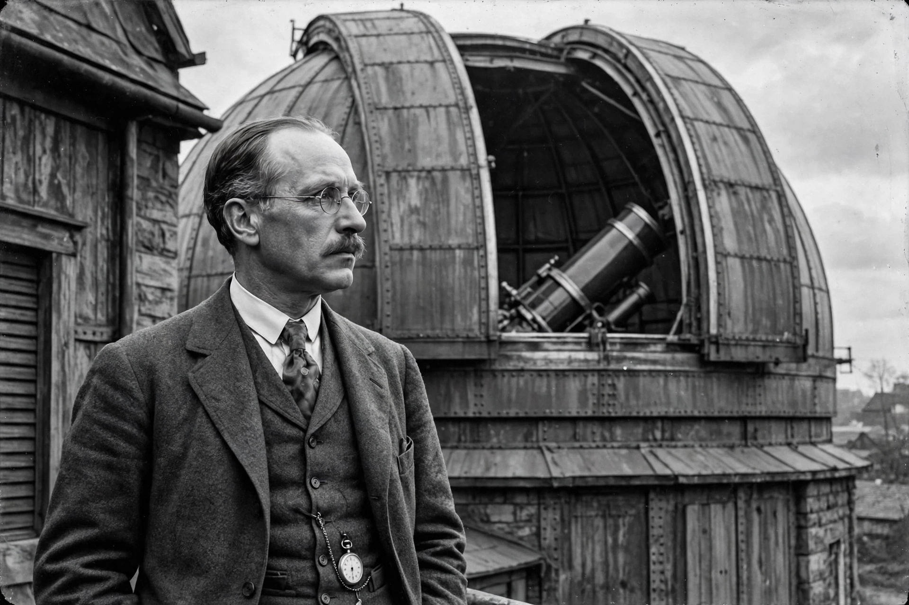

From Wikipedia, the free encyclopedia
| Harlow Shapley | |
|---|---|
 | |
| Born | November 2, 1885 Nashville, Tennessee, U.S. |
| Died | October 20, 1972 (aged 86) Boulder, Colorado, U.S. |
| Alma mater | University of Missouri; Princeton University (PhD) |
| Known for | Determining the size of the Milky Way and the Sun's position far from its center; the Great Debate of 1920 |
| Awards | Henry Draper Medal (1926); Gold Medal of the RAS (1934); Bruce Medal (1939) |
Harlow Shapley (November 2, 1885 – October 20, 1972) was an American scientist, head of the Harvard College Observatory (1921–1952), and a political activist during the latter 20th century. He used RR Lyrae stars to correctly estimate the size of the Milky Way galaxy and the Sun's position within it, placing the galactic center in the direction of Sagittarius and dethroning the Sun from the center of the Galaxy — a shift sometimes called the second Copernican revolution.
Shapley was born in Nashville, Tennessee, and left school after the fifth grade, studying at home and working as a journalist covering crime for newspapers in Kansas and Missouri. He later completed a compressed high-school course and entered the University of Missouri, originally intending to study journalism; when the journalism program was delayed, he switched to mathematics and astronomy. At Princeton he earned his doctorate under Henry Norris Russell, studying eclipsing binary stars.
From 1914 Shapley worked at the Mount Wilson Observatory in California. Studying the distribution of globular clusters using Cepheid and RR Lyrae variable stars as distance indicators, he concluded that the clusters formed a vast spherical system centered far from the Sun, in the constellation Sagittarius, and that the Milky Way was far larger — about 300,000 light-years across, by his (overestimated) measure — than previously believed.
On April 26, 1920, Shapley debated Heber Curtis before the National Academy of Sciences in Washington, D.C., in what became known as the Great Debate. Shapley argued the spiral nebulae were inside a single enormous Galaxy; Curtis argued they were separate "island universes." History split the verdict: Shapley was right about the size of the Milky Way and the Sun's off-center position, but Edwin Hubble's 1924 discovery of Cepheids in the Andromeda Nebula proved Curtis right that spiral nebulae are external galaxies.
Shapley succeeded Edward Charles Pickering as director of Harvard College Observatory in 1921, serving until 1952. He expanded the observatory's work on galaxies — the Shapley–Ames Catalog of bright galaxies is named partly for him — helped found UNESCO, and became a prominent public advocate for science. His daughter-in-law's name is associated with the Shapley value in game theory through his son Lloyd Shapley. The lunar crater Shapley and asteroid 1123 Shapleya honor him.